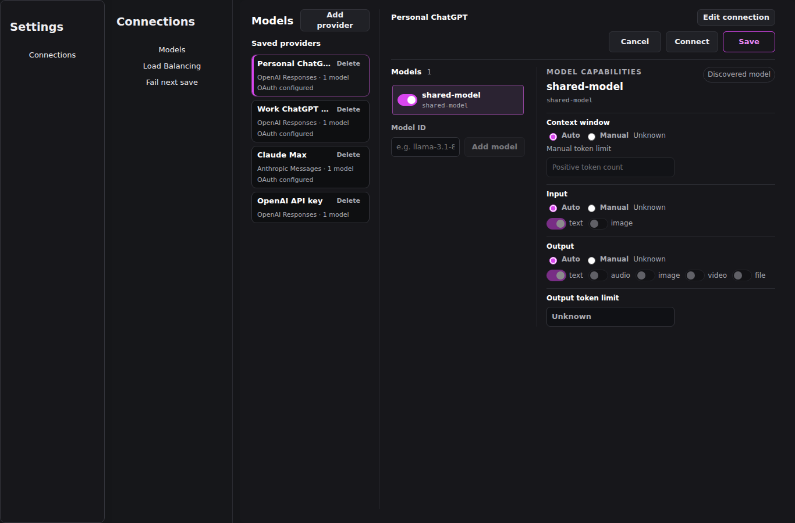
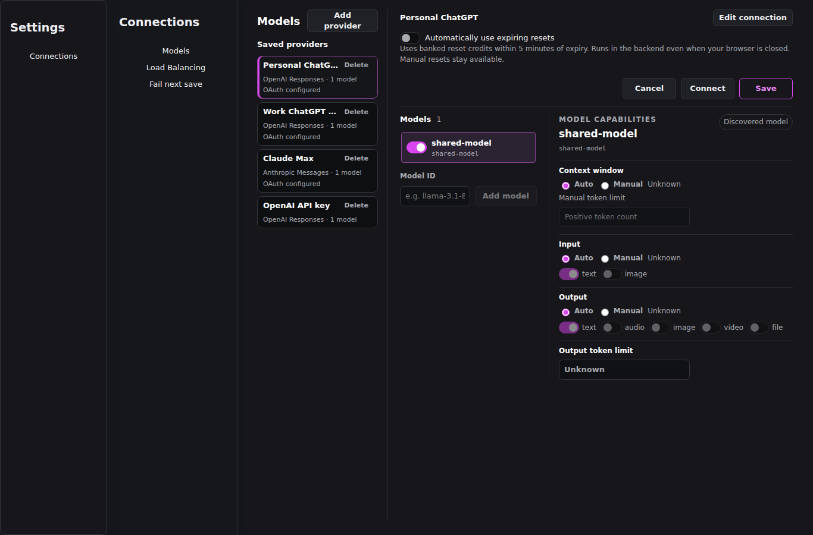
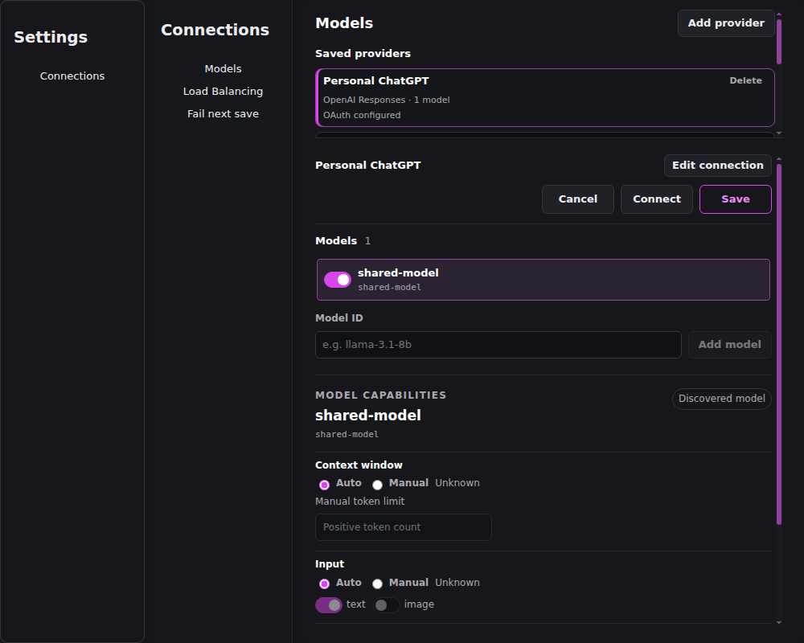
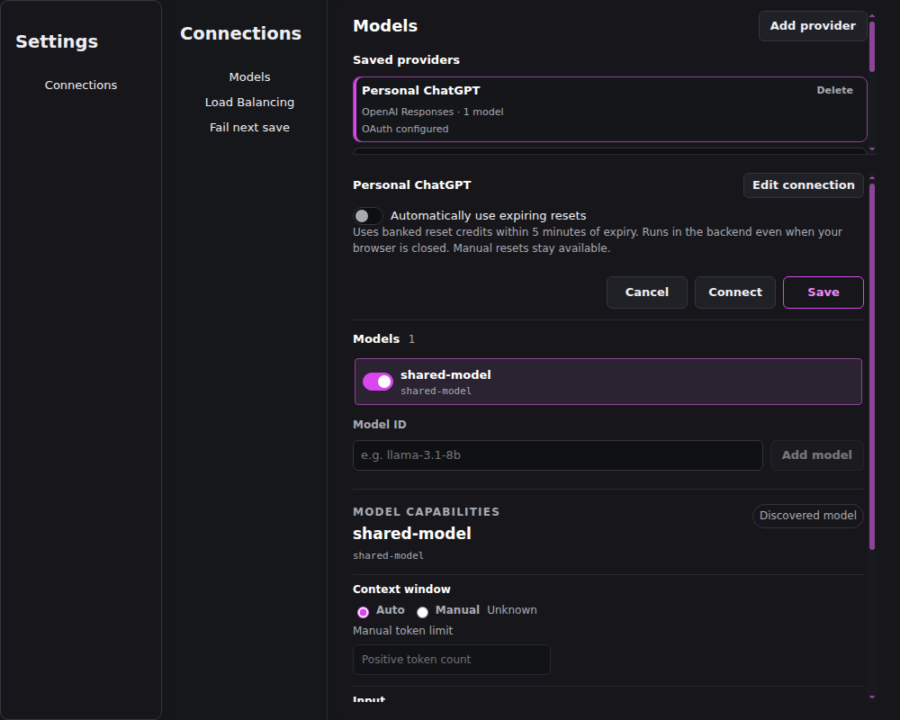
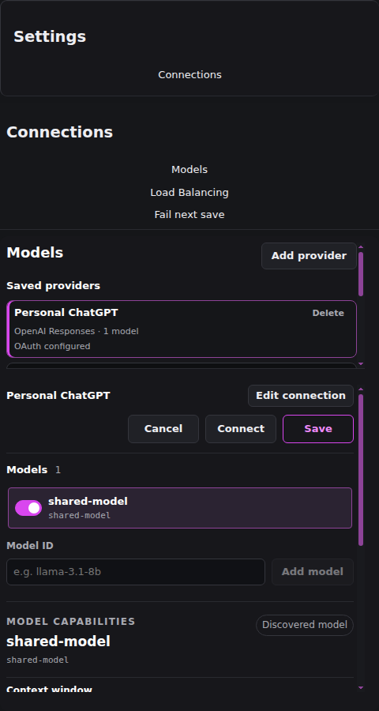
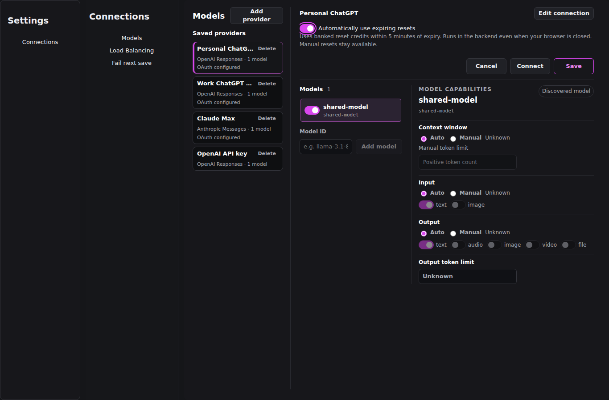
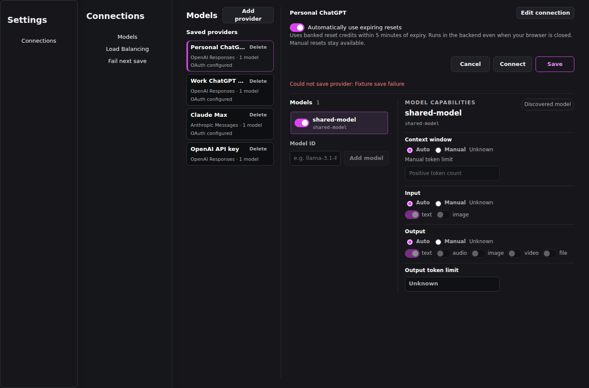
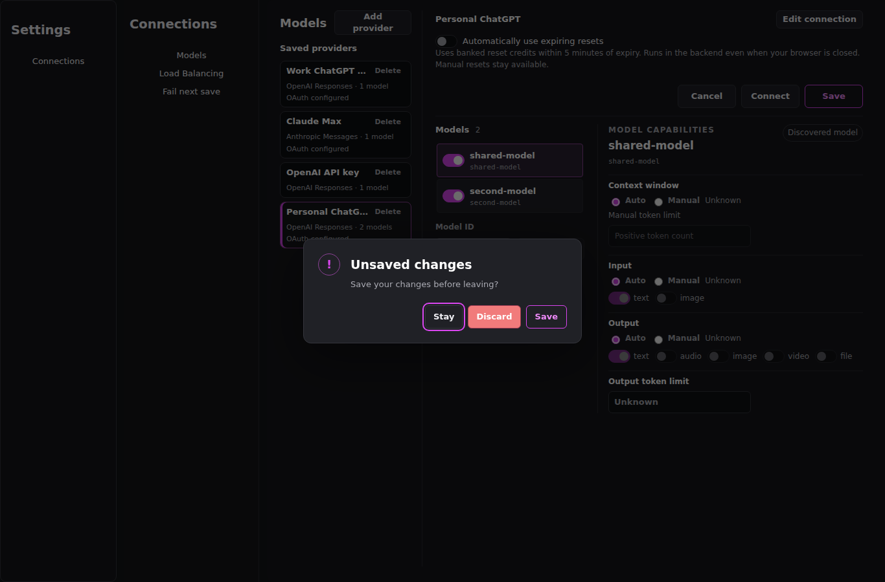
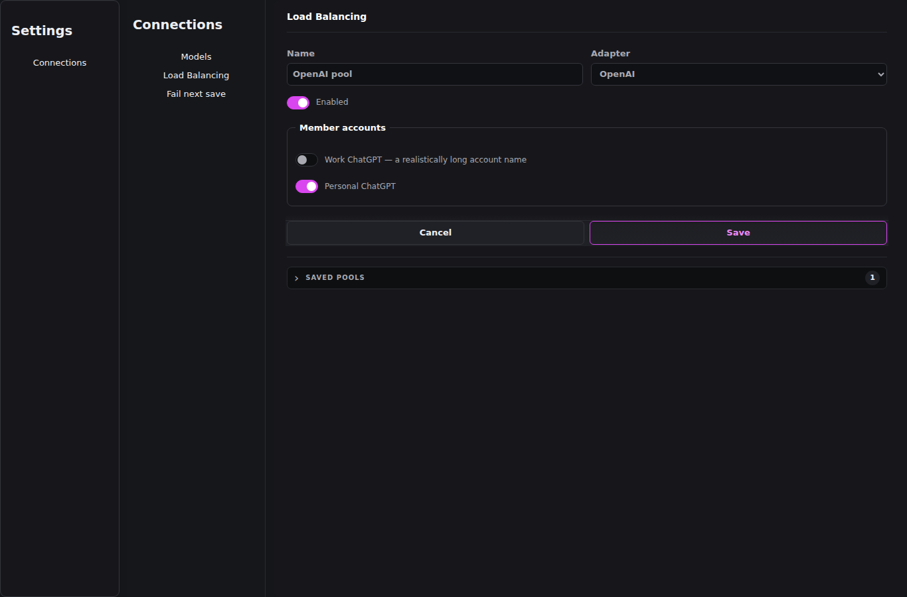

Automatically use expiring resets
Isolated UI fixture. Mocked settings only; no reset redemption or live settings changes.
Browser checks ·
Acceptance record ·
Interactive fixture
Desktop — before / after

Before · 1366 × 900

After · 1366 × 900
Medium — before / after

Before · 1000 × 800

After · 1000 × 800
Narrow — before / after

Before · 480 × 900
 After · 480 × 900
After · 480 × 900
Interaction states

Enabled + keyboard focus

Save failure retains draft

Unsaved changes

Load balancing exclusion